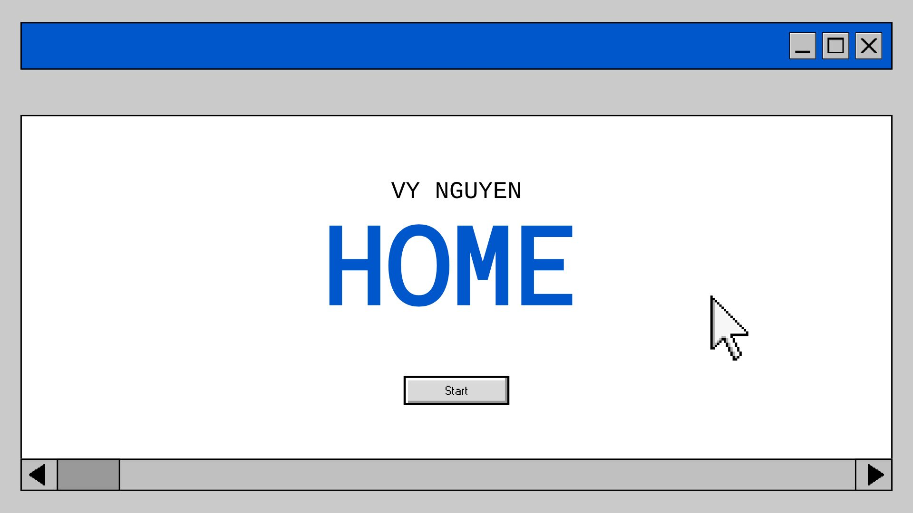

About
The About page provides background information about me, my academic focus, and my future goals. It also connects my interests to both technical work and personal growth.
Information Communication Technology Student

Welcome to my multi-page website. This project focuses on building meaningful content using semantic HTML rather than relying on styling or visual features. The goal is for each page to have a clear purpose and logical structure.
I am intentionally keeping this site simple so that the structure is easy to read and understand. By using proper semantic elements, I am creating a foundation that supports accessibility, organization, and long-term maintainability.
This website serves as both a class assignment and a growing personal portfolio. It allows me to practice structuring information in a way that is clear to users and understandable to browsers and assistive technologies.
Each page is organized using headings that form an outline. If someone skimmed only the headings, they would still understand what the page is about and how the information is grouped.
The About page provides background information about me, my academic focus, and my future goals. It also connects my interests to both technical work and personal growth.
The Projects page highlights coursework and personal work I have completed. Each project includes a short explanation of what I built and what I learned from the process.
The Resources page includes learning materials and structured plans that help me stay organized. It also demonstrates how tabular data can be used properly when appropriate.
The Cooking page shares a personal interest outside of academics. It explains how I approach meal planning and preparation in a structured and consistent way.